Expand all Collapse all Maelstrom Wanderer only cascades when you CAST it, from hand or the command zone: each of its two cascades exiles cards until it finds a nonland spell costing 7 or less and casts it free. Copies, flickers and cards put onto the battlefield never cascade, so every recast from the command zone is the engine. Bracket 3 for ratdos: 100 cards, 35 lands plus 3 double-faced spell/lands, average mana value 5.18. The three Game Changers are Ancient Tomb, Mana Vault and Consecrated Sphinx. This is big-mana Temur ramp into cascade bombs, with one compact win (Kiki-Jiki + Zealous Conscripts) that waits until turn 6. The engine: Maelstrom Wanderer 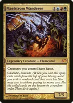Maelstrom Wanderereight mana for a hasty 7/5 plus two free spells costing 7 or less; every creature you control has haste, so whatever it hits attacks at once. +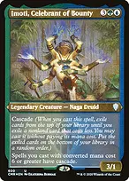Maelstrom Wanderer + Imoti, Celebrant of BountyImoti gives spells costing 6 or more cascade, so Wanderer cascades three times. Imoti also turns every big creature in the list into a two-for-one. +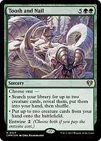Maelstrom Wanderer + Tooth and Nailthe best cascade hit. Cast free, you may still pay the {2} entwine: search for Kiki-Jiki and Zealous Conscripts and put both onto the battlefield in the same resolution. From turn 6 that is a win. +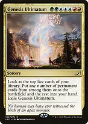Maelstrom Wanderer + Genesis Ultimatuma free Ultimatum puts every permanent among your top five cards onto the battlefield and the rest in your hand; the creatures among them attack at once with Wanderer's haste. +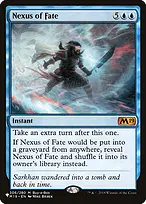Maelstrom Wanderer + Nexus of Fatea cascaded Nexus is a free extra turn with Wanderer's hasty board already out. Nexus shuffles back instead of going to the graveyard. 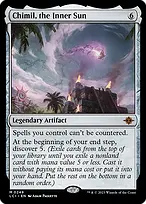Chimil, the Inner Sunmakes your spells uncounterable, which protects Wanderer's recasts and the big sorceries, and discovers 5 at every end step for another free spell. Apex Devastatorfour cascades on a ten-mana creature; each one finds a spell costing 9 or less. The compact win (turn 6 or later) 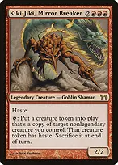+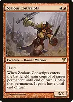Kiki-Jiki, Mirror Breaker + Zealous ConscriptsKiki copies Conscripts; the copy's enter trigger untaps Kiki, and the next copy untaps it again. Make as many hasty 3/3s as you like and attack. Kiki itself has haste, so a freshly cast or fetched Kiki can start the loop the same turn. →Tooth and Nail → Kiki-Jiki, Mirror Breakerhardcast with entwine is nine mana: search for both halves and put them straight onto the battlefield. Without entwine, fetch both to hand when you can cast them next turn. Zealous Conscriptson its own, steals the best permanent on the table for a turn, untapped and hasty: an opponent's bomb, or their mana rock for one big turn. +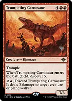Kiki-Jiki, Mirror Breaker + Trumpeting Carnosaurwithout the combo, Kiki copies a Carnosaur every turn for a free discover 5. Fury, Inferno Titan and Agent of Treachery make good copies too. Ramp: get to eight mana Mana Vaultthree colorless on turn one or two. It doesn't untap normally and deals damage while tapped, so use it for an early Kiki, Ugin or Wurmcoil and accept the life loss. Ancient Tombtwo colorless for two life a turn. With Mana Vault or Sol Ring it can cast a six-drop on turn two. Thran Dynamothree colorless every turn from turn four; it pays for the generic Eldrazi and Wurmcoil, not the colored pips of Wanderer. Three Visitsfetches any Forest card, including Taiga, Tropical Island and the shocks, untapped. Nature's Lore does the same. 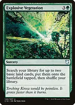Explosive Vegetationtwo basics tapped; with Cultivate, Kodama's Reach and Skyshroud Claim this is the turn-three-to-five bridge to Wanderer. 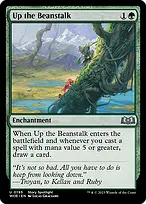Up the Beanstalkdraws whenever you cast a spell costing 5 or more, which is most of this deck. Cascaded spells count, because they are cast. Free spells and big swings 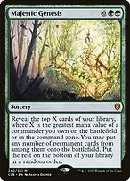Majestic GenesisX is your commander's mana value, eight for Wanderer, even while it sits in the command zone: reveal eight and put every permanent among them onto the battlefield. Etali, Primal Conqueror // Etali, Primal Sicknessevery player exiles cards until a nonland card, and you cast all of them free, opponents' spells included. With Wanderer's haste, Etali swings immediately. 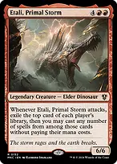Etali, Primal Stormeach attack exiles everyone's top card and lets you cast them free. Haste from Wanderer makes the first attack immediate. 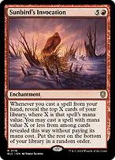Sunbird's Invocationeach spell from hand reveals cards equal to its mana value and casts one costing that much or less. Big spells chain into free spells. Possibility Stormsymmetrical, but this deck is mostly creatures and sorceries, so its random swaps tend to be big. It does not touch Wanderer cast from the command zone or anything cascaded, since those aren't cast from hand. Opponents' instants turn into random instants, which hurts their interaction. 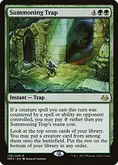Summoning Trapsix mana to put the best creature among the top seven onto the battlefield; free if an opponent counters one of your creature spells this turn. 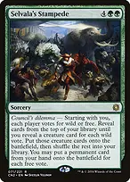Selvala's Stampedeeach wild vote puts the next creature off your library onto the battlefield; each free vote puts a permanent from your hand. Either way you get big creatures. Turntimber Symbiosis // Turntimber, Serpentine Wooda spell when you need a big creature from the top seven, a land when you need a land drop. Sea Gate Restoration and Valakut Awakening work the same way. Bombs worth cascading into or stealing with Ulamog, the Ceaseless Hungerexiles two permanents when cast and is indestructible. Usually a hardcast or Tooth and Nail target; the only cascade that reaches it is Worldspine Wurm cast with Imoti out. 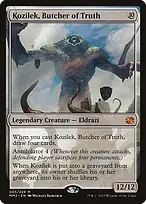Kozilek, Butcher of Truthdraws four when cast and makes defenders sacrifice four permanents per attack. Like Ulamog, only a Worldspine Wurm cascade through Imoti can reach it. 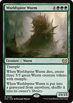+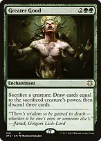Worldspine Wurm + Greater Goodsacrifice the 15/15 to draw fifteen, discard three, get three 5/5 trampling Wurms, and shuffle Worldspine back for later. 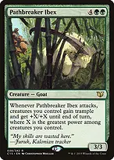Pathbreaker Ibexon attack the whole team gets +X/+X and trample, where X is your greatest power. Next to Worldspine, Ulamog or Kozilek, every attacker hits for fifteen or more. 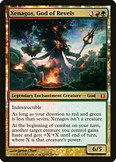Xenagos, God of Revelsat each combat, doubles one creature's power and gives it haste. Pointed at a Wurm or Eldrazi, that is a twenty-plus trampling hit. Consecrated Sphinxdraws two whenever an opponent draws. It's a Game Changer for a reason; protect it. Vaultborn Tyrantdraws a card and gains 3 life whenever it or another creature with power 4 or more enters, which is nearly every creature here. It comes back as a copy the first time it dies. 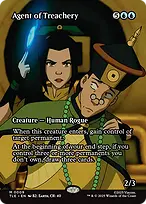Agent of Treacherykeeps the best permanent on the table. Steal three things and it draws three every end step. 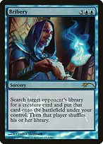Briberyputs the best creature in an opponent's library onto your battlefield. Look for their own bomb or commander-grade threat. 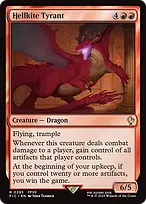Hellkite Tyranta hit steals every artifact the defending player controls, mana rocks included. Kogla, the Titan Apefights on entry and destroys an artifact or enchantment each attack. 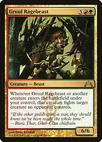Gruul Ragebeastevery creature that enters under your control afterwards fights something, so each creature you cascade into is also removal. 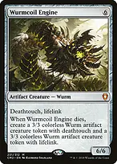Wurmcoil Enginelifelink and deathtouch, and it leaves two Wurms behind. It survives All Is Dust and Ugin's minus because it is colorless. Sweepers: they hit you too 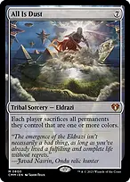All Is Dusteach player sacrifices every colored permanent, yours included. Your colorless Eldrazi, Wurmcoil, World Breaker and mana rocks stay. Cast it when your board is mostly colorless and theirs isn't. 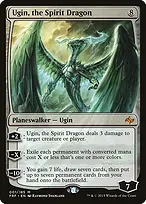Ugin, the Spirit Dragonthe minus exiles every colored permanent with mana value X or less, yours included; the same colorless pieces survive. The plus three damage is a steady finisher. 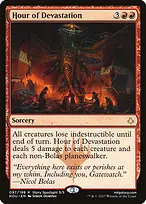Hour of Devastationfive damage to every creature after removing indestructible. Ulamog, Kozilek and Worldspine have the toughness to survive; your mana dorks and Kiki-Jiki don't. 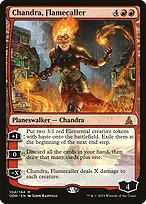Chandra, Flamecallerthe minus deals X to every creature, yours too. The plus makes two hasty 3/1s each turn, and the zero refills your hand. 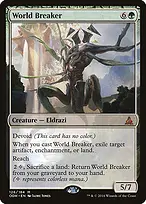World Breakerexiles an artifact, enchantment or land when cast and is colorless, so it survives your own All Is Dust. 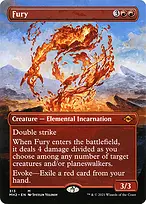Furyevoke it for free by exiling a red card from hand: four damage split among creatures or planeswalkers. Evoking is still casting a creature, so only at sorcery speed. Hardcast it for a double-striking body too. Homeward Pathevery player regains control of the creatures they own. Use it against theft decks; it also returns anything you stole with Bribery, Agent or Conscripts. 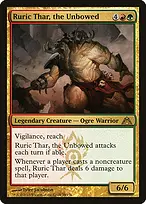Ruric Thar, the Unbowedsix damage to whoever casts a noncreature spell, you included: your sorceries, ramp spells and planeswalkers trigger it too. Cast those before Ruric lands, or accept the damage. Opening hand and sequencing Keep three or four lands with one or two pieces of ramp, or two lands with Sol Ring, Mana Vault or Ancient Tomb. Ship hands of only seven-drops. Turns one to three: rocks, Rampant Growth, Farseek, Nature's Lore, Three Visits and Sakura-Tribe Elder. Turns four and five: Cultivate, Kodama's Reach or Explosive Vegetation into a big threat or an early Wanderer. Under the house rules the Kiki-Jiki and Zealous Conscripts combo, including a free entwined Tooth and Nail, waits until turn six; before then cascade for value, steal threats and pressure with hasty bombs. If Wanderer keeps getting removed, Chimil keeps the recasts safe from counters, and Imoti or the cheaper bombs keep the engine going without it.